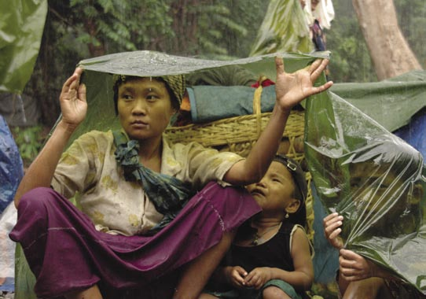
Global Day of Prayer
for Burma
March 11, 2007
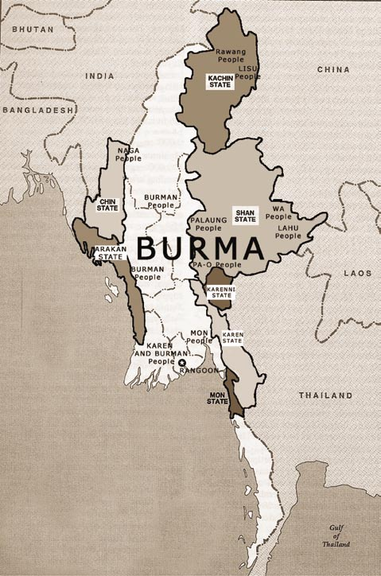
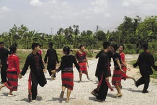
Population of Burma:
Approximately 50 million
IDPs in Burma:
Over 1 million
Refugees from Burma:
Over 1 million in coun-
tries neighboring Burma
with over 150,000 living
in camps
KAREN
People
Children from a Wa hostel doing a traditional dance
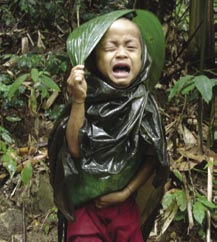
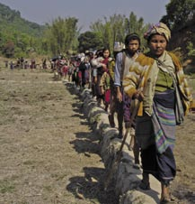
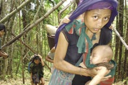
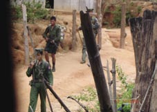
The Attacked
2006 Offensive by Burma Army Displaces Over
25,000 Villagers in Northern Karen State
The people in these photos are some of the over 25,000
displaced by the Burma Army in the worst offensive since
1997. The unrelenting attacks in the Karen State are part of
the plan by the dictators to completely dominate, chase out
or crush any Karen people in these areas.
While the scale of displacement and destruction
is massive, people die individually, each death an
irreplaceable loss. Saw They Shur was burned alive by
Burma Army soldiers in his home at Play Hta Village,
near Hoki, Toungoo District. He was 47 years old and
married with six children. His wife and children are
now in hiding.
In April 2006 in Nyaunglebin District, we treated
a 9-year-old girl, Naw Eh Ywa Paw, or the "Flower
that Loves God" after she was shot (her father and
In hiding in Mon Township, Karen State, following
grandmother were shot dead in the same attack). She
Burma Army attacks.
is now on the run again with over 1,500 others in her
valley. They were attacked for trying to stay with their
families in a hiding place near their destroyed village.
The disruption of their food production, the burning of
their homes and the shoot-on-sight orders of the Burma
Army have made staying in their homeland untenable
for thousands more. They need immediate protection
and the freedom to return to their homes. Because of
these attacks they also need food, medicine, shelter and
help to rebuild their homes, schools and lives.
The Attackers
Burma Army soldiers in a Karen village. This photo
was taken at great risk by a relief team leader hiding
in an area occupied by the Burma Army.
Karen families flee Toungoo District.
Fleeing Burma Army's attacking troops.
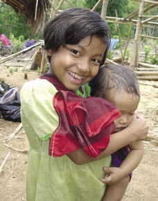
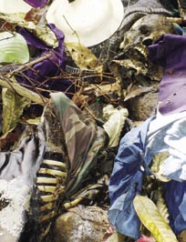
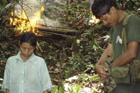
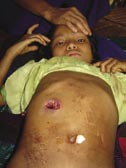
Naw Eh Ywa Paw
Naw Eh Ywa Paw
The Flower that Loves God
Dear friends,
These are pictures of "the Flower that Loves
God", a 9-year-old Karen girl who was shot and
wounded while her father and grandmother were
shot to death by the Burma Army in April 2006.
She eventually recovered and with her mother,
brother and sisters, moved to a new hiding place
near their old village in Mon Township, Karen
State. The Burma Army is now attacking the place
where she and others are hiding, and she is on the
run again.
The Burma Army needs to be stopped, and she,
her family and the other Karen need to be able to
go home. Until that happens this is an emergency
situation and she and her people need protection,
food, medicine and shelter.
Thank you and
God bless you,
A relief team leader
Here she is recovering in late April at a new hiding
Northern Karen State
place. In November 2006 she had to flee again and is
FBR
now in hiding with over 1,500 others.
Eh Ywa Paw being
treated by the team
after she was shot by
Burma Army troops,
early April 2006.
The body of her father, Saw Maw Keh, where he
Relief team holds service for Naw Eh Ywa Paw's father
was shot carrying her 80-year-old grandmother
and grandmother with her aunt, the sister of
(who was also shot) as all three were trying to flee
Saw Maw Keh.
the Burma Army.
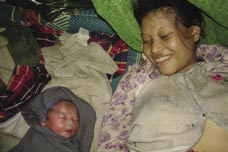
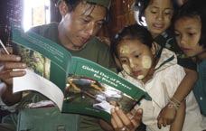
With Displaced Karen in Burma:
A Message from a Relief Team
We have spent most of the year on relief missions with
some of the over one million displaced Karen, Karenni and
Shan people in Eastern Burma as they fled Burma Army
attacks. Bad things happen here, but I would like to share
some of the good things, starting with an excerpt from a
message we sent from the field.
"Over 150 people in a long straggling line were moving
towards us across the rice fields. One of our team members
said, `Those are newly displaced people from Toungoo
District who have been on the move for two weeks fleeing
the Burma Army'. As I approached them I saw the strain
on their faces and heard the babies crying. I suddenly felt
Karenni IDPs join in the Global Day of Prayer.
like I did not have much good news to share. That night,
as our team and I spent time with these people, a different
picture began to emerge: families huddled around small
fires eating rice supplied by the local village and resistance
invited us to join them and soon children were laughing
and adults were smiling. We treated patients, talked and
prayed with them. The next morning as they prepared
to keep moving we joined them for prayer and our team
sang the hymn "Holy, Holy, Holy" with them. When we
finished, Naw Nancy, a 60-year-old Karen school teacher,
said to us, `Thank you, but please wait, we want to sing for
you and give you something'. All the people stood up as
she led them in a Karen hymn, "God is Full of Power". We
were all moved and departed with smiles and handshakes
Saw Brave born in hiding during the 2006 offensive in northern
Karen State.
we to continue our mission, and they to a safer place."
Burma Army had attacked a village destroying homes,
Joy in the midst of difficulty; faith in the midst of
looting possessions and burning the village church. It was
uncertainty; choosing to be thankful instead of dwelling
a thing of beauty to watch the Karens' agility and speed in
on misery. These are the lessons the Karen people keep
the jungle. They watched for the Burma Army but when
teaching us. The following are a few of many other good
we passed under a fruit tree, they stopped and climbed
things the team and I have experienced on these missions.
high in the tree to bring us some fruit. They exemplify
men completely at home in their environment, sure of
1) People like you, who pray for, encourage and support
themselves yet not arrogant. They are fluid in motion and
us. You care about these people; you choose to have an
appreciative of all of nature's bounty. At the remains of the
eternal perspective and you lift us up.
village, these men looked at the destruction and then at us.
2) The wonderful, amazingly capable and brave men and
They shrugged and one man smiled saying, "We have to
women who make up the relief teams. They are full of
try. . this is our home. . we wil not give up".
love, humor, and the toughness to go anywhere needed.
3) How people under direct Burma Army attack help each We are reminded that evil is not the only power in the
other. Even as some are killed, others run back to help the
world. God is here with us, has suffered for us, and knows
survivors, especially to carry the children.
our suffering. Through it all, love triumphs and the soul
4) For Eh Ywa Paw, the 9-year-old girl shot by the Burma
cannot be killed. We are thus free to do what is right, to
Army, and her survival.
ask forgiveness when we do wrong and to try again. To
5) For people in the resistance like Mr. Eh Wa, a high
build and rebuild, to love and serve and to enjoy all the
school teacher for displaced children, who always smiles
gifts of life. This lesson was taught by you, by the Karen
and yet only sees his family twice a year and has already
people and I believe, by Jesus who shows us the way and
spent seven years in prison. When asked why he endures
with mercy, helps us on that way. For Christ's sacrifice and
separation from his family and the risk of capture or death,
friends like you I am grateful.
he said with a smile, "For the freedom of my people".
6) For faith and making the best of each day. After one
-A relief team leader and the teams and families inside.
service with IDPs we walked a few hours to where the
Matthew 28:1-20
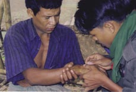
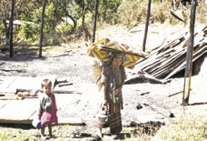

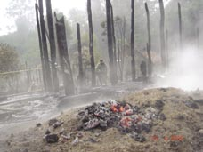
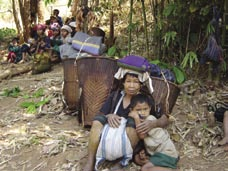
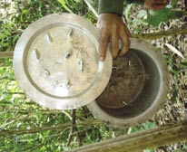
Internally Displaced People (IDPs)...
running for their lives
Families Displaced in Eastern Burma.
Village burned by the Burma Army on 27 April, 2006,
Taw Ko Toe Baw, Muthraw District, Karen State.
Burma Army attacks and chases Karenni villagers
Arakan relief team gives medical attention to
from their homes, then burns their villages.
displaced persons.
Porters
This man was used
as a porter by the
dictators' army and
beaten. He escaped
and was cared for by
the Karen resistance.
After receiving medical
treatment he began his
journey home. On the
way he was captured
and killed by the
Burma Army in a betel
nut grove.
Cooking pot and cover destroyed by
the Burma Army to terrorize villagers
and drive them from their homes.
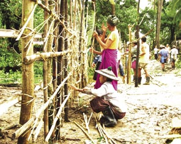
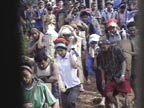
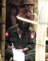
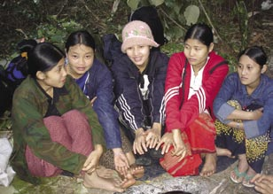
Forced Labor and Captivity
Burma Army
Division
66 soldier
recording
the names
of the forced
laborers.
Villagers in Nyaunglebin District forced to build a fence around their
Some of the 850 people forced to
village and the new Burma Army camp nearby.
carry supplies for the Burma Army
Division 66.
IN PRISON
Naw Baby, a Karen nurse, age
22 years, captured by the Burma
Army and now serving an eight-
year sentence. Naw Baby is the
second lady from the right,
wearing red. Before she was
captured she and the other nurses
had said, "We are afraid of the
Burma Army, but we want to help
our people and our Karen Nation,
so we try." Please pray for this
young woman and her freedom.
Thank you,The Free Burma Rangers
November 1, 2006
Aung San Suu Kyi
Aung San Suu Kyi, a Nobel Peace Prize Laureate, has now
spent over 11 years under house arrest. She is the leader
of the National League for Democracy (NLD), the party
which won over 80% of the vote in the 1990 elections in
Burma. The military dictatorship responded by ignoring
the results of the elections and jailing members of the
opposition.
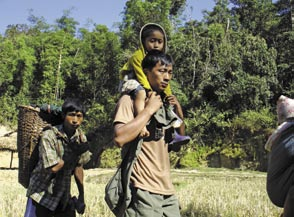
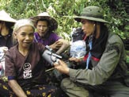
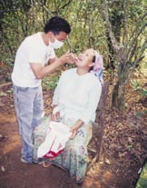
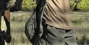
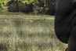
Good Life Club
Shan relief team provides medical treatment,
T-shirts and encouragement to Shan villagers.
"Th e thief comes only to steal and kill and destroy;
I have come that they may have life and have it to
the full. I am the good shepherd. Th e good shepherd
lays down his life for the sheep." John 10:10-11
Kachin relief team member carries displaced Karen child.
GLC Counselors
"If a brother or sister is naked and destitute of daily food, and one
of you says to them, `Depart in peace, be warmed and fi lled,' but do
not give them the things which are needed for the body, what does it
profi t?" James 2:15-16 (NKJV)
I recently went on a three week trip to Shan State in Northeastern
Burma. My job was to train eight team members who would serve as
Good Life Club (GLC) counselors for eight FBR relief teams. After
an intensive period of training each team is deployed for a six-month Lahu relief team provides dental aid to displaced
mission. Th e GLC Counselor is responsible to help children in crisis. Lahu villagers in Shan State.
He provides basic trauma care, arranges for the children's welfare
Kid Packs
and ongoing care, documents conditions and violations, and shares a
-small comb and mirror
message of hope and faith with the displaced people encountered.
-a box of children's chewable vitamins
-2 children's toothbrushes
-fi ngernail clippers
I have met many of the children these men and women have helped.
-a small toy
In one day alone, I met three girls who were brutally raped by Burma
-a drawing or photograph of you or your group
Army soldiers. One was 11 years old, another was 14, and the one
-a postcard from your city or state with a verse
worst aff ected by her ordeal was merely 9 years old. Th ese three
of scripture
girls epitomize what I found to be commonplace in IDP areas: the
Mom & Baby Packs
children of Burma are in constant danger of abduction, violation,
-small fi ngernail clippers
forced slavery, and abuse by a regime that seems to operate without a
-multi-vitamins for mom
conscience and with impunity.
-pediatric vitamins (not needing refrigeration)
-2 sets for baby including cap, hand mitts, shirt
(not a onesie)
Th e GLC counselors help children like these three girls. Th ey reach
-a teether
out with compassion and demonstrate love and faith, often saving
-a drawing or photograph of you or your group
lives. Th e T-shirts, toys, health and hygiene kits, and literature they
-a postcard from your city or state with a verse
distribute provide some aid, but in my view, they are secondary
of scripture
to the primary role the GLC counselors play in providing hope,
Th ank you for your help in sending the packs to us.
safety, and compassion for kids whose lives are marked by the loss of
At this time, it is still not possible to send charitable
childhood and innocence.
bulk shipments to us. Please send standard
household/gift size boxes with the description
Steve Gumaer, a relief team trainer
"household/personal goods" on the customs form.
Partners Relief and Development
Send packs standard airmail (USA: not to exceed
79 inches/length/girth) to the address on the back
www.partnersworld.org
of this booklet, with the name, "GLC".
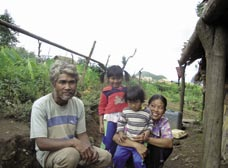
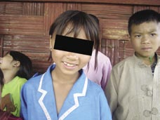
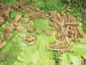
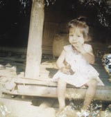
Shan State
From Forced Labor and Drug Addiction
Nang Sap,
to Freedom: One Shan Story
captured by the
Burma Army
when she was
5 years old, has
been missing
for seven years.
She is reported
dead, sacrificed
at the Ho Mong
temple by
Burma Army
troops.
This Shan family fled their village in Shan State where
Nang Sap at 4 years old.
they had been forced to work for the Burma Army under
There are multiple eyewitness accounts of her capture
brutal conditions. The father was addicted to opium and
by the Burma Army, which put her in a backpack and
the mother to amphetamines. They told us the Burma
took her to a new pagoda being built in Ho Mong,
Army gave them drugs as payment and to keep them
Shan State. There she was reportedly entombed with
under control. Their two little daughters were dirty and
two other children as a sacrifice. Her mother is still in
malnourished. They had been walking for days and hiding
trauma. This is not the only case of human sacrifice
from Burma Army and Wa Army patrols as they escaped
that has been reported.
to the south. They told us they heard that the Shan pro-
democracy resistance had a protected area for displaced
people like them and that the Shan State Army could help
them kick their drug dependencies. We were glad to lead
them there, and put the family in the center of our column
as we headed back to this protected area.
It became very difficult for the family to move fast as the Burma
and Wa armies pursued us, even though we were already carrying
their two girls and belongings. We had to give the mother an IV
and were just able to get them to the safe area.
Two years later we were preparing for a mission deeper
inside and met this family again. They were in the same
safe area of displaced people that we had brought them
to. We were amazed at how healthy and strong they were.
They smiled when we met. They had been off all narcotics
Raped by the Burma Army
since they arrived two years ago. They were free, had a
Mway Khan (above-name changed),
solid cabin, farmed the hills around the site and sent their
a young Shan girl who was raped
daughters to the local school for displaced people. To see
by a Burma Army soldier. She was
them strong and smiling is a wonderful answer to prayer.
9 years old at the time and is deeply
Thanks to all of you for being part of this.
traumatized and still suffering from
-A relief team leader, FBR the violent rape. Her family fled to a
displaced persons site after the rape.
Massacre of 16
The rape occurred in Ho Mong,
Shan villagers on
Southeastern Shan State. A Shan FBR
22 October 1996,
team helped this girl and her family
Ho Yan Village,
escape last year. She is 10 years old
Khun Hing District.
now.
Remains found on
30 May 2006.
(Right) A seventeen-year-old girl raped for two days by
three Burma Army soldiers, 16-17 May 2006.
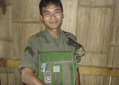
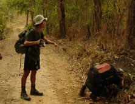
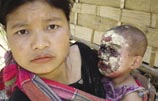
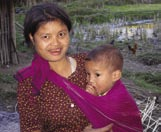
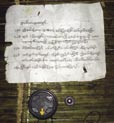
Relief Team Members Lost and Remembered
Mya Win (left) documents road crossing
Saw Mu 1983-2006
Saw Mya Win
A Letter from a Relief Team Leader, 6 May 2006
A Letter From Mya Win's Wife
Yesterday we lost one of our best men due to a landmine placed by
(He died while serving displaced people in his home, Toungoo
the Burma Army. His name was Saw Mu (Mr. Happy). We called
District, Northwestern Karen State.)
him Mr. Afraid because he was not. He was the Muthraw District
FBR team video cameraman. He was the team counselor and
Dear Free Burma Rangers,
volunteered for additional duty, with the Good Life Club's children First, I want to thank all of you because you let me know about
my husband's passing away. Until now, I did not know where
programs. He was a bright, humble and brave young man. We are
my husband died or the disease that he died from. I was very sad,
saddened by his death but believe he did not die in vain and was
but when I saw and got your letter and your encouragement, I
the finest example of Karen manhood. His was a full life of giving
was happy. If not, I did not know nothing. Please do not find a
to many and he set an example of servant leadership. He died
replacement for him, I will replace him on the FBR team. My
putting a light on the current Burma Army attacks on civilians
husband has died, but I won't give up, just as my husband tried for
and that light is shining. Saw Mu was single, a Christian and his
his people while he was alive. So, I wil try and do something for
hope was in God. He was always smiling and laughing and was a
my people, too. Please do not replace him. I wil replace him. Please
friend to me and my family. Even though his life has made a great
excuse me for one year and I wil prepare, right now I am quite busy,
difference for good, for me, only God's promise of a new life gives
but for the coming years I wil find and do something for my people.
me any hope in the situation of his death. We will do our best to
honor Saw Mu, help his family and are blessed to have walked in
Dear Tha-U-Wa-A-Pa,
this land with him.
(An FBR team leader's name meaning "Father of the White Monkey")
I need your help to have two or three men help me to go back to
do a memorial service my for husband. I would like to request you
The Face of
to send Mya Win and his daughter's photo that he took before he
Relief
died. Please, if you see it send it back to me. I will keep it for a
One year ago,
remembrance. If MyaWin's photos show any of you, please send it
medics found
back to me too please. I wish for all of you, that you will pray for
this boy with a
Mya Win's family always.
badly burned
face. After initial
treatment from
This letter was found placed next
the medics
to a Burma Army landmine. The
following text was found on a similar
and additional
sign found later, that was placed with
treatment at a
a Burma Army landmine.
nearby mobile
From Burma Army:
clinic, the boy is
"For the hiding villagers"
now completely
(1) No one is allowed to live in this
healed.
area.
(2) People must move to Muthey or
beside the car road at the relocation
site as soon as possible, by 5 May.
(3) Our troops do not want to shoot
and capture.
(4) By this date (5 May) anyone who
stays in this area will be shot. This is a command from above.
(5) You can come back when this area has peace.
(6) Karen soldiers, do not do work that God and angels don't like such as
putting landmines and setting ambushes. Make peace and live together
happily with your family.
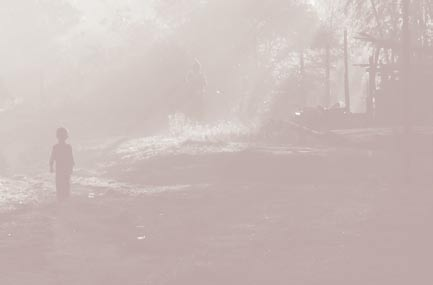
Resources
World Wide Web and Email
Amnesty International
www.amnesty.org
AP News
www.apnews.com
Burma Campaign UK
www.burmacampaign.org.uk
Burma Forum of Los Angeles
www.burmaforumla.org
Burma Issues
www.burmaissues.org
Burmanet News
www.burmanet.org
Burma Relief Centre
brccm@loxinfo.co.th
Christians Concerned for Burma
www.prayforburma.org
Christian Solidarity Australasia
www.cswoz.org
Christian Solidarity Worldwide
www.csw.org.uk
Democratic Voice of Burma
www.dvb.no
Free Burma Rangers
www.freeburmarangers.org
Human Rights Watch
www.hrw.org
Irrawaddy Magazine
www.irrawaddy.org
Internal Displacement Monitoring Centre
www.internal-displacement.org
Jubilee Campaign UK
www.jubileecampaign.org
Karen Action Group
www.kagint.org
Karen Human Rights Group
www.khrg.org
Karen National League (USA)
www.karen.org
National Coalition Government of the Union of Burma (NCGUB) www.ncgub.net
Open Society Institute Burma Project
www.soros.org/burma
Online Burma Library
www.onlineburmalibrary.org
Partners Relief and Development
www.partnersworld.org
Radio Free Asia
www.rfa.org
Shan Herald Agency for News
www.shanland.org
Tears of the Oppressed
www.human-rights-and-christian-persecution.org
US Campaign for Burma
www.uscampaignforburma.org
In Print
Licence to Rape: Th e Burmese military regime's use of sexual violence in the ongoing war in Shan and Karen States.
Shan Human Rights Foundation and Shan Women's Action Network. May 2002.
Fink, Christina. Living in Silence: Burma Under Military Rule. Zed Books 2001.
Lintner, Bertil. Burma in Revolt. Silkworm Books. Revised Edition 2000.
Lintner, Bertil. Outrage: Burma's Struggle for Democracy. White Lotus Co.
Rogers, Benedict. Land Without Evil: Stopping the Genocide of Burma's Karen people. Monarch Books 2004.
Smith, Martin. Burma: Insurgency and the Politics of Ethnicity. Zed Books Ltd.
Tucker, Shelby. Burma, Th e Curse of Independence. 2001.
Videos
Th is Is Our Home: Standing for Freedom in Burma. 3.5 min. A brief look at the problems facing the country of
Burma and those who resist its military dictatorship.
Th e Enemy Came. 3.5 min. Internal y Displaced People on the run from the Burma Army in Karen State, Burma.
In Hiding: A year of survival under the Burma Army: 2004-2005. 12 min. Documentary on human rights abuses
committed by the Burma Army.
Steps to Freedom. 18 min. Training relief teams and emergency relief to displaced people in Burma's war zones.
Fear and Hope: Responding to Burma's Internally Displaced. 6 min.
Love in Action. 12-minute video about the war in Burma and relief teams in action.
Good Life Club. A video showing the practical ways to take action for IDP women and children.
Beyond Rangoon. 1995 Castle Rock Entertainment. Stars Patricia Arquette.
Forgotten Allies. 1994 BBC Timewatch.
(Please contact CCB for a free copy of Th is Is Our Home, Th e Enemy Came, In Hiding, Steps to Freedom, Fear and Hope, Love in
Action or Good Life Club videos).
For more suggested resources please see www.prayforburma.org.
Th is booklet has been produced by Christians Concerned for Burma (CCB). All text copyright © CCB 2006. All rights reserved. Th is booklet may be reproduced if proper credit is given to text and
photos. Cover photo copyright © Partners/FBR. All other photos copyright © Free Burma Rangers (FBR) 2006. Scripture portions quoted are taken from the NIV unless otherwise noted.
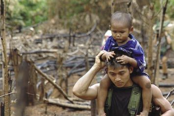
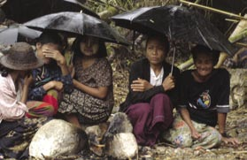
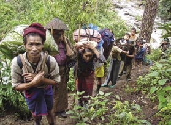
Message From an FBR Relief
Team Leader:
These pictures of people praying,
hiding, fleeing and of a medic carrying
a child to safety show faith, suffering,
uncertainty, love in action and hope.
In Proverbs 3:5-6, we are urged, "Trust
in the LORD with all your heart and
lean not on your own understanding;
in all your ways acknowledge Him,
and He will make your paths straight."
It is not easy to trust God with all of
our hearts, especially when we suffer.
Villagers on the run from Burma Army attacks in Eastern Burma. But there is no other way to live with
faith than to give God our whole
hearts no matter what each of us are
facing wherever we are. May we give
ourselves wholeheartedly to God as He
leads us on.
Thank you for your prayers and for
your stand with the people of Burma.
God Bless you,
A Relief Team Leader
Free Burma Rangers
Displaced villagers praying in a hiding place during a rainstorm.
Christians Concerned for
Burma (CCB)
P.O. Box 14, Mae Jo
Chiang Mai, 50290
Thailand
ccb@pobox.com
www.prayforburma.org
Relief worker carrying a displaced child running away from Burma Army attacks.